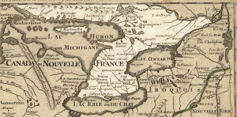
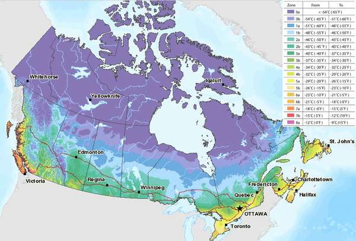
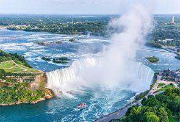
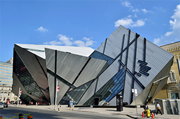
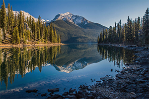

Археологические и генетические исследования коренных народов подтвердили присутствие человека на севере Юкона с периода примерно 26 500 лет назад, и в южной части провинции Онтарио с 9500 лет назад. Археологические объекты Олд Кроу Флэтс и Блуфиш — два самых ранних археологических памятника человеческого (палеоиндейцев) жилья в Канаде. Среди индейцев Канады есть восемь уникальных мифов о создании мира и адаптаций этих мифов. Это мифы о земле, мировом родителе, появлении, конфликте, разбое, возрождении трупа, двух создателях и их соревновании, а также миф о братьях. Цивилизации канадских аборигенов включали в себя постоянные или городские поселения, сельское хозяйство, общественные и исторические памятники архитектуры и сложную социальную иерархию. Некоторые из этих цивилизаций исчезли задолго до первых постоянных европейских поселений (конец XV — начало XVI веков), и были обнаружены в ходе археологических исследований.

Канада находится на севере американского континента
Средние температуры января и июля различаются для каждой области. Зима может быть очень суровой в некоторых регионах страны, среднемесячные температуры могут достигать −15 °C в южной части страны, а иногда и −45 °C с сильными ледяными ветрами. Минимальная температура, когда-либо наблюдавшаяся в Канаде, составляет −63 °C (на Юконе). Ежегодно уровень снежного покрова может достигать нескольких метров (например, в Квебеке в среднем 337 см). Побережье Британской Колумбии, особенно остров Ванкувер, представляет собой исключение и обладает умеренным климатом с мягкими и дождливыми зимами. Летние температуры могут достигать +35 °C, даже +40 °C, учитывая индекс влажности.

Нельзя назвать какое-либо блюдо в Канаде национальным. Канада — многорегиональная и многонациональная страна, где кухня варьируется в зависимости от региона. Бывший премьер-министр Канады Джо Кларк так высказывался об этом: « В Канаде много кухонь. Это не солянка, а шведский стол». Первоначальные корни канадской кухни — в традициях коренных североамериканских народов, а также в английской и французской кухне. Поэтому канадскую кухню будет правильнее назвать англо-американо-канадской кухней. Местная кухня впоследствии была дополнена при последующих волнах иммиграции в 18-м и 19-го веке из Центральной, Южной и Восточной Европы, а также из Китая.
Церковь хранит память о многих чудесах, которые совершал брат Андре Бессетте. Показательно, что папа Иоанн Павел II признал чудеса, которые приписываются брату Андрею. Признание произошло в 1982 году, а уже в 2010 году состоялась канонизация брата Андрея. Его канонизировал папа Бенедикт XVII.

Ниагарский водопад входит в перечень природных достопримечательностей Канады. Кроме того, он считается одним из чудес света. Водопад находится на границе Канады и Америки. С ужасающим грохотом тонны водяных потоков мощно низвергаются ежесекундно. Водопад находится в плотном облаке брызг, поскольку напор воды здесь достаточно сильный.

Коллекции Королевского музея в Онтарио содержат более 6 000 000 предметов. В нем более 40 галерей. В экспозициях можно видеть артефакты, коллекции динозавров, предметы искусства Африки и Ближнего Востока. Музей часто проводит выставки, поэтому он будет интересен тем, кто решает, что посмотреть в Канаде. Годом основания музея является 1857.

Вода в озерах перемещается из одного в другое по принципу сообщающихся сосудов. Дело в том, что озера соединены реками. Площадь бассейна составляет 768 000 квадратных километров, а объем воды — 22 671 кубических километров. Самое глубокое озеро — Верхнее, самое мелководное — Сент-Клэр. Правительство оберегает этот уникальный природный ансамбль. В частности, на очистные сооружения ежегодно выделяются крупные суммы. Все 5 озер судоходные. Кроме того, они являются местом отдыха тысяч туристов.
Замок включен в список национальных достопримечательностей Канады. Авторство проекта принадлежит американцу архитектуру Брюсу Прайсу. Архитектура замка-отеля отвечает стилистике средневекового замка. Торжественное открытие состоялось в 1893 году, но он продолжал достраиваться и увеличиваться в объеме. Архитектор Уильям Сазерленд Максвелл спроектировал центральную башню, благодаря которой замок стал выглядеть более внушительно. Строительные работы окончательно были закончены в 1926 году.